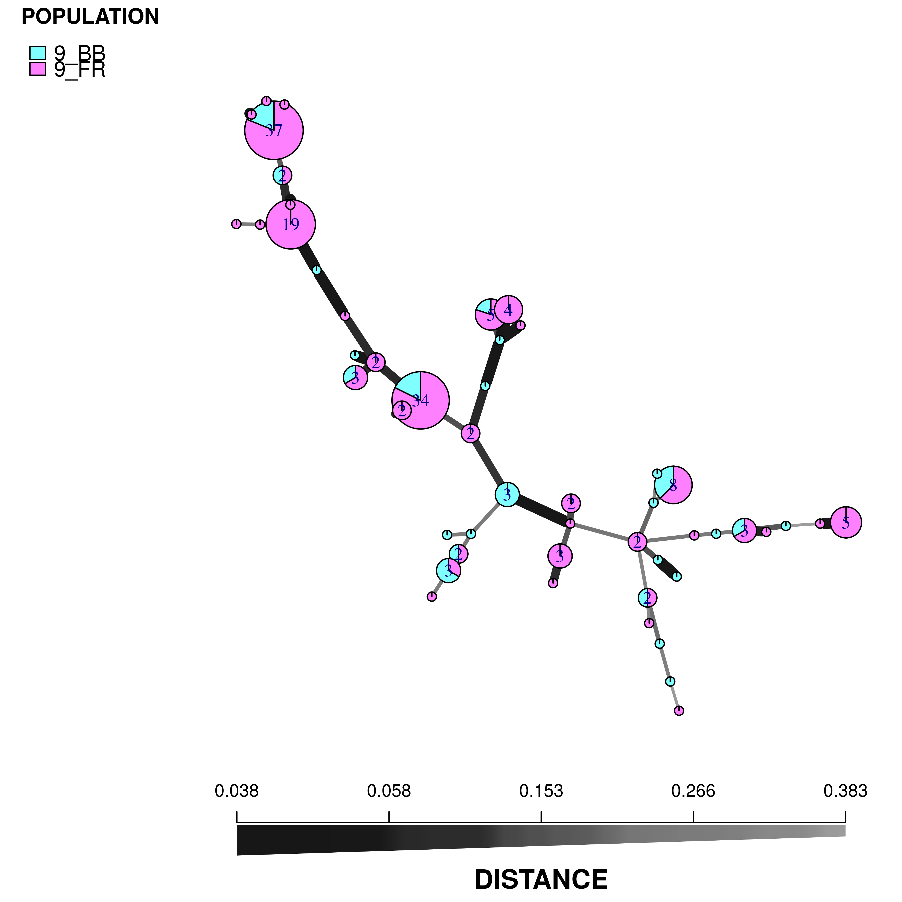
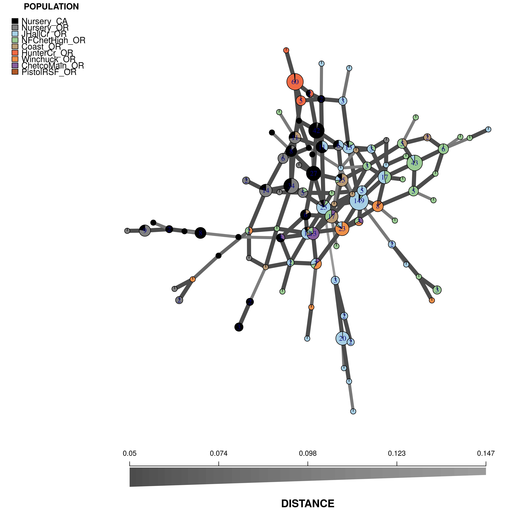

Minimum spanning networks
ZN Kamvar, SE Everhart and NJ Grünwald
Minimum spanning networks (MSN) are a great way to visualize relationships among individuals in your data. Particularly for clonal organisms it can be a more powerful visualization tool than trees. In this chapter, we will show you how to construct and view minimum spanning networks on the command line and in an interactive viewer.
From the command line
Note:
This section will utilize Bruvo’s distance (Bruvo et al., 2004). Calculating Bruvo’s distance is computationally different to other distances; hence, this requires specialized functions for minimum spanning networks and bootstrapping that do not require a distance matrix:
| General function | Bruvo specific |
|---|---|
poppr.msn |
bruvo.msn |
aboot |
bruvo.boot |
Minimum spanning network
For this section, we will use the monpop data set from (Everhart & Scherm, 2015). See Chapter 5 for more details. We will be focusing on sources of multilocus genotypes. The seasonal epidemic of the pathogen Monilinia fructicola begins with an ascospore (sexual propagule) released from a mummified peach fruit that had overwintered on the ground. It infects an emerging blossom that, in turn, asexually infects fruit, which proceed with cyclical, asexual infections. Two obvious questions are:
- Are the major genotypes of Fruit Rot (FR) samples closely related?
- To what degree do the Blossom Blight (BB) samples contribute to the FR?
Let’s load the data:
library("poppr")
library("magrittr")
data(monpop)
splitStrata(monpop) <- ~Tree/Year/Symptom
summary(monpop)##
## // Number of individuals: 694
## // Group sizes: 23 41 132 73 5 13 1 64 85 130 30 97
## // Number of alleles per locus: 3 6 3 11 9 5 8 7 5 9 8 11 10
## // Number of alleles per group: 48 53 58 48 37 40 13 44 60 64 60 63
## // Percentage of missing data: 0.51 %
## // Observed heterozygosity: 0We notice that tree number 26 is the only one to have been sampled for all three years. Let’s use it as an example.
t26 <- monpop %>% setPop(~Tree) %>% popsub("26") %>% setPop(~Year/Symptom)
t26##
## This is a genclone object
## -------------------------
## Genotype information:
##
## 155 multilocus genotypes
## 390 haploid individuals
## 13 codominant loci
##
## Population information:
##
## 3 strata - Tree, Year, Symptom
## 6 populations defined - 9_BB, 9_FR, 10_BB, 10_FR, 11_BB, 11_FRNow that we have our tree, let’s calculate a MSN using Bruvo’s distance (Bruvo et al., 2004). Remember that this distance is based on a stepwise mutation model, so we have to first specify what kind of repeats units we have in our data (eg. dinucleotide = 2, trinucleotide = 3, etc.):
# Set up our repeat lengths and populations to analyze
reps <- c(CHMFc4 = 7, CHMFc5 = 2, CHMFc12 = 4,
SEA = 4, SED = 4, SEE = 2, SEG = 6,
SEI = 3, SEL = 4, SEN = 2,
SEP = 4, SEQ = 2, SER = 4)
sub9 <- c("9_BB", "9_FR")
# Calculate the MSN
t26.9msn <- bruvo.msn(t26, replen = reps, sublist = sub9, showplot = FALSE)The minimum spanning network is calculated via bruvo.msn. We have set the argument showplot = FALSE because we want to use the more powerful function plot_poppr_msn to view the MSN. I am telling it to label none of the samples, color populations using the “cm.colors” palette and scale the size of the nodes to \(log_{1.25}\). If you want to know what other things this function can do, simply type help("plot_poppr_msn")
# Visualize the network
set.seed(120)
plot_poppr_msn(t26, t26.9msn, inds = "none", palette = cm.colors, nodebase = 1.25)
We can see that the Blossom Blight in the tree (pink pie slices) heavily contributed to the major groups of MLGs found in the Fruit Rot (blue pie pieces).
Try it for yourself! See if you can produce similar graphs with the 2010 and 2011 populations.
Interactive viewer
Creating a customized, publishable MSN is somewhat daunting as the plot_poppr_msn function has a whole lot arguments:
args(plot_poppr_msn)## function (x, poppr_msn, gscale = TRUE, gadj = 3, mlg.compute = "original",
## glim = c(0, 0.8), gweight = 1, wscale = TRUE, nodebase = 1.15,
## nodelab = 2, inds = "ALL", mlg = FALSE, quantiles = TRUE,
## cutoff = NULL, palette = NULL, layfun = layout.auto, beforecut = FALSE,
## pop.leg = TRUE, scale.leg = TRUE, ...)
## NULLWe created the interactive tool imsn() to facilitate interactive plotting. This function will be able to create minimum spanning networks from all genind objects in your current R session. In this section, we will recreate the plot above. First we will make sure that we have all the data we need and then we will run imsn().
ls() # Show all the data we have in our workspace## [1] "Aeutamova" "Aeutamovacc" "Aeutccsignif"
## [4] "Aeut.new" "Aeut.new.amova" "Aeut.new.amova.test"
## [7] "Aeutsignif" "alpha" "bib"
## [10] "chrom" "cols" "contrib"
## [13] "dapc.H3N2" "dapc.results" "dapc.x"
## [16] "dna" "dna_file" "dp"
## [19] "dp2" "dpf" "freq399"
## [22] "freq906" "gac" "gff"
## [25] "gff_file" "gi.rubi" "gl.rubi"
## [28] "grp" "gt" "H3N2"
## [31] "html" "i" "iPinf"
## [34] "lambda" "mat" "min_sample"
## [37] "miss" "monpop" "monpop_diversity"
## [40] "mon.tab" "MX" "MXia"
## [43] "mxpair" "myIndex" "myLevels"
## [46] "myList" "myPlots" "myRegex"
## [49] "myRows" "N" "nan1"
## [52] "nancycats" "nanhwe.full" "nanhwe.mat"
## [55] "nanhwe.pop" "nanmean" "nanzero"
## [58] "newmat" "node.size" "p"
## [61] "Pinf" "pinflt" "Pinf.ploidy"
## [64] "plotrange" "pnw.dapc" "pop.data"
## [67] "Pram" "pramx" "P.tab"
## [70] "quants" "reps" "rubi.dist"
## [73] "rubi.msn" "rubi.pca" "rubi.pca.scores"
## [76] "rubi.VCF" "SA" "SAia"
## [79] "samps_per_row" "sapair" "snp399"
## [82] "snp906" "sub9" "t26"
## [85] "t26.9msn" "temp" "tree"
## [88] "vcf" "vcf_file" "x"
## [91] "X" "x.dist" "x.msn"
## [94] "x.msn2" "x.tree" "xval"Note: you will not be able to access your R console after running this function until you close the pop-up app.
imsn()(Note: you probably will not see the whole screen like this, but you can still scroll down)

Intial view of imsn
We can see that there are five tabs and a sidebar. For now, we’ll explain what is on the sidebar.

status view
The first thing you see is a green bar that says “ready”. This means that there are no processes going on in the background and that it’s waiting for input. Below that are three buttons: Go!, reData, and reGraph. These tell the program that you are ready render your graphs.
Parameters (sidebar)
Notice that there are two main sections, Data Parameters and Graphical Parameters.
Data Parameters
As you can expect, these options represent parameters that will manipulate your data. Changing any of these choices means that the distance matrix will be recalculated. When you modify things in this section and are satisfied with your choices, you can use the reData button to update the graph. You see here four choices presented:
- Choose dataset - This dropdown menu allows you to choose your data set.

- Choose populations - this will change based on your data set, but it allows you to select different populations with which to subset your data

- Convert to genclone? - If your data is in genind format, you can convert it to genclone (minimally reduces time for clonal organisms)

- Choose distance calculation - The distance measure to calculate from your data (notice that there’s “Custom” at the bottom)

- Distance arguments - every distance has different arguments, this is where you can modify them

- Include reticulations? - This is an important parameter that will include reticulations in the minimum spanning network. We’ll explore this with the
Pramdata set later.

Graphical Parameters
The parameters listed here allow you to modify the look and feel of the graph without having to recalculate the data. We encourage the user to play around with these to see what the different sliders and buttons do.
Output (tabs)
Next let’s explore the different tabs on the MSN popup window:
Plot
This is the tab you see immediately. It has nothing in it because we haven’t told imsn() to do anything. Let’s hit Go! with our default parameters and see what happens.

minimum spanning network of partial_clone
We now have a minimum spanning network of partial clone based a dissimilarity distance (“diss.dist”) where the distance is represented as counts of dissimilar alleles.
Data

partial_clone output
This is the output of your data set. You can use this to confirm that your data is what you expect.
Command

partial_clone command
If you copy and paste this command into your R console, you can recreate the minimum spanning network. This is important to make sure that your figure is reproducible.
data("partial_clone") # Don't forget to load the data
partial_clone_sub <- popsub(partial_clone, blacklist = character(0))
partial_clone_dist <- diss.dist(partial_clone_sub, percent = FALSE, mat = FALSE)
min_span_net <- poppr.msn(partial_clone_sub, partial_clone_dist, showplot = FALSE, include.ties = TRUE)
set.seed(69)
plot_poppr_msn(partial_clone,
min_span_net,
inds = "ALL",
mlg = FALSE,
gadj = 3,
nodebase = 1.15,
palette = rainbow,
cutoff = NULL,
quantiles = FALSE,
beforecut = TRUE)Save Plot

This allows you to save the plot to your computer in pdf or png format.
Session Information

This shows you what package versions were used to create the graph.
Re-creating MSNs
We will now recreate the minimum spanning network that was displayed for the monpop data set.
First, choose the t26 data set that we defined above:

Next, make sure you only select the “9_BB” and “9_FR” populations.

Now, Select “Bruvo’s Distance”:

Notice how the options have now changed. This is because bruvo’s distance is a special distance that is parametric. Don’t worry about the model for missing data, but in the SSR repeat lengths section, type “reps” (we defined this earlier):

reps # our previous definition of "reps"## CHMFc4 CHMFc5 CHMFc12 SEA SED SEE SEG SEI SEL
## 7 2 4 4 4 2 6 3 4
## SEN SEP SEQ SER
## 2 4 2 4Now, modify the following graphical parameters:
- Node Size Scale: 1.25 (this is the option
nodebase) - Random seed: 120
- Labels: none (this is the option
inds) - Palette: cm.colors
Once everthing is set, hit reData and the graph will reset just like this:

Your turn (use the data for Phytophthora ramorum)
Now we will use data from Kamvar et al. (2015). This is the Sudden Oak Death pathogen collected from forests in Curry County, Oregon and nurseries in California and Oregon (Goss et al., 2009). We will use this data set to see why reticulations are important for highly clonal organisms.
Load the data
Exit the imsn() graphical window and execute the following statements:
data("Pram")
Pram##
## This is a genclone object
## -------------------------
## Genotype information:
##
## 98 multilocus genotypes
## 729 diploid individuals
## 5 codominant loci
##
## Population information:
##
## 3 strata - SOURCE, YEAR, STATE
## 9 populations defined -
## Nursery_CA, Nursery_OR, JHallCr_OR, ..., Winchuck_OR, ChetcoMain_OR, PistolRSF_ORThis data has a few things in the “other” slot that we need. First is the repeat lengths called “REPLEN” and the other is a vector of hexadecimal colors for each population called “comparePal”.
other(Pram)$REPLEN## PrMS6A1 Pr9C3A1 PrMS39A1 PrMS45A1 PrMS43A1
## 3.00000 2.00000 4.00001 4.00000 4.00000other(Pram)$comparePal## Nursery_CA Nursery_OR JHallCr_OR NFChetHigh_OR Coast_OR
## "#000000" "#808080" "#A6CEE3" "#99CD91" "#B89B74"
## HunterCr_OR Winchuck_OR ChetcoMain_OR PistolRSF_OR
## "#F06C45" "#ED8F47" "#825D99" "#B15928"We will use these to create the following minimum spanning network:

Here are the parameters you should use:
- Data:
- Dataset: Pram
- Distance: Bruvo
- SSR Repeat Lengths:
other(Pram)$REPLEN(Paste code into the pop-up app.)
- Graphical:
- Grey Scale: 9
- Node Size Scale: 1.95
- Random Seed: 78
- Labels: none
- Palette: Custom:
other(Pram)$comparePal(Paste code into the pop-up app.)
When you finish your session, you can exit the app by closing the window.
References
Bruvo R., Michiels NK., D’Souza TG., Schulenburg H. 2004. A simple method for the calculation of microsatellite genotype distances irrespective of ploidy level. Molecular Ecology 13:2101–2106. Available at: http://dx.doi.org/10.1111/j.1365-294X.2004.02209.x
Everhart S., Scherm H. 2015. Fine-scale genetic structure of Monilinia fructicola during brown rot epidemics within individual peach tree canopies. Phytopathology 105:542–549. Available at: https://doi.org/10.1094/PHYTO-03-14-0088-R
Goss EM., Larsen M., Chastagner GA., Givens DR., Grünwald NJ. 2009. Population genetic analysis infers migration pathways of phytophthora ramorum in us nurseries. PLoS Pathog 5:e1000583. Available at: http://dx.doi.org/10.1371/journal.ppat.1000583
Kamvar Z., Larsen M., Kanaskie A., Hansen E., Grünwald N. 2015. Spatial and temporal analysis of populations of the sudden oak death pathogen in oregon forests. Phytopathology 105:982–989. Available at: http://dx.doi.org/10.1094/PHYTO-12-14-0350-FI